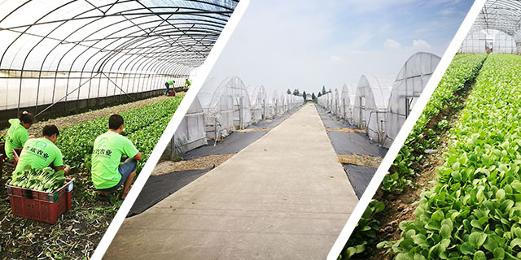
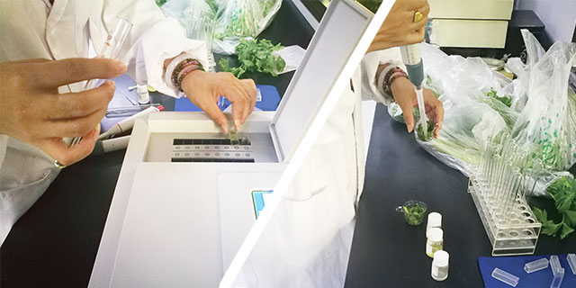
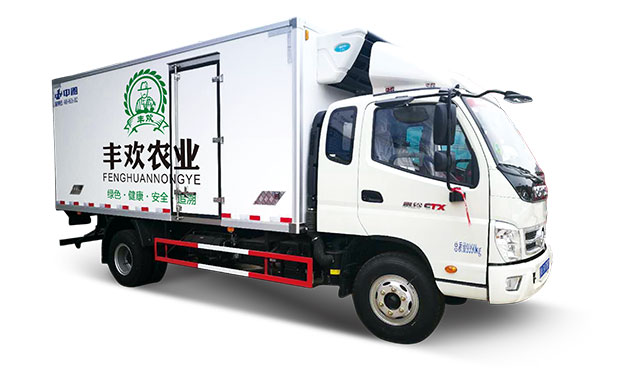

农场种植
丰欢农业种植基地，严格按照农业部门监管指导种植，使用有机肥料，安全健康无污染，为客户提供高品质的绿色农产品。

食品安全检测
公司严把食品安全关，丰欢购进配置了先进的检测设备，以科技保食品安全。主要有蔬菜农药残留检测，瘦肉精快速检测，肉类水分的检测，亚硝酸盐快速检测。甲醛快速检测，吊白块快速检测，假冒伪劣味精检测，食品中漂白剂快速检测，食用油过氧化值速测，大米石蜡速测，大米新鲜度速测，面粉中掺入增白剂的检测等项目实施一整套科学规范的作业流程和服务标准，全力打造从田间到餐桌的农产品安全保障体系。

配送优势
企业资质
证件齐全，合法经营；
依法纳税，正规发票；
专业配送团队，实力生鲜配送保障。
安全
从源头掌控，从源头保障品质；
配备高科技检测设备，每日每批检测科学保障食品安全；
所配送副食品，提供检验检疫报告，确保食品安全；
冷链运输，专业保鲜方式运输，杜绝食材运输过程中变质；
环保健康采用食品级白色塑料袋包装，杜绝二次污染。
价格合理
基地生产，自产自销；
定单式生产；
集中采购统一配送，价格实惠；
生鲜集中配送，优化多个供应商多台车辆的配送方式，降低配送成本。
售后保障
专业售后服务，及时响应，解决配送后各种问题，杜绝食品安全事故。
新品食材推荐，季节新菜推荐
用心·服务
稳定、多样、安全的原材料供应
高效、快捷的配送服务
具有竞争力的价格优势

配送方式
- 所配送的副食品均有符合国家卫生标准的许可证明和检疫证明；
- 所配送的蔬菜提供农残检测报告；
- 根据客户要求质量配送，不合格产品无条件退回并及时更换；
- 配送的数量以客户订货和过磅为准；
- 按客户要求的送货时间准时配送到指定地点；
- 可预送至客户认可，再签订配送合同；合作期间若有不满意的地方，随时终止合同；
- 产品定价为半月或一月一次，在尊重市场实际行情下，双方协商定价，保证给予客户最优惠价格。半个月或一个月结算；
- 定时跟踪服务，认真处理客户的每一条意见和建议。
